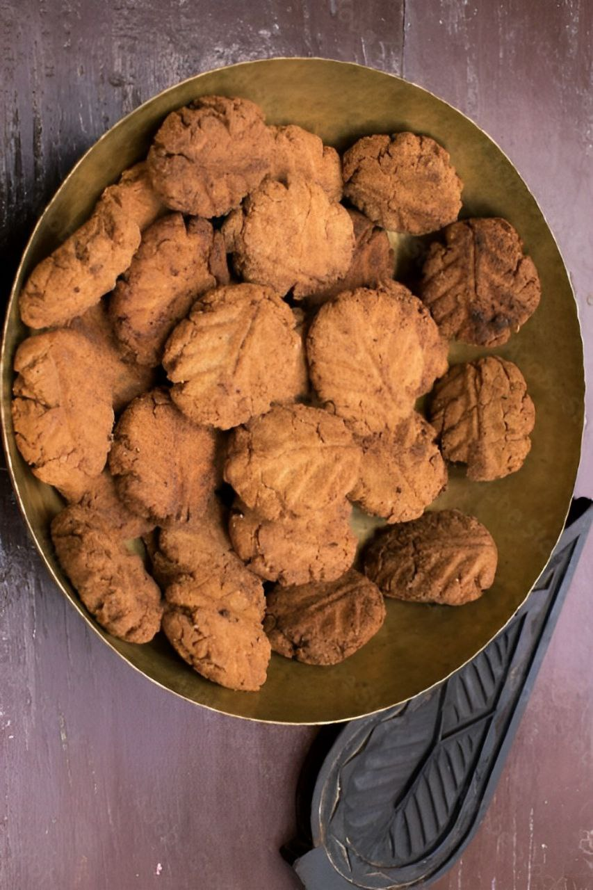

Thekua, a traditional Jharkhandi sweet, is a delectable deep-fried
pastry made from wheat flour, jaggery, and ghee. Its intricate shapes and rich, caramelized
flavors make it a delightful treat, often enjoyed during festivals and special occasions in
Jharkhand!